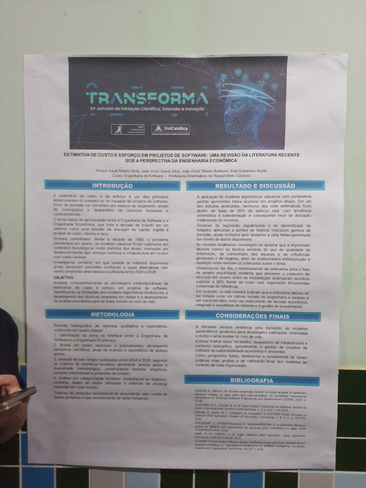
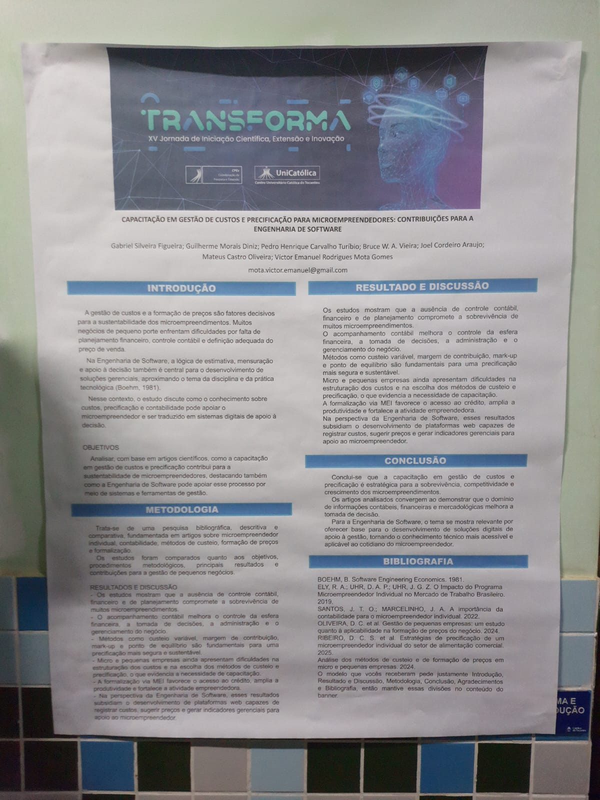
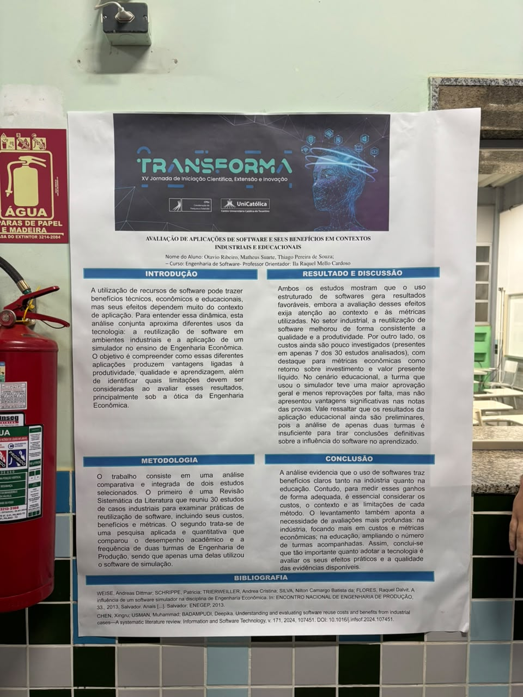

Estimativa de Custo e Esforço em Projetos de Software
Uma revisão da literatura recente sob a perspectiva da Engenharia Econômica, focada nos modelos de previsão e sustentabilidade na área de tecnologia.
Ler matériaCobertura da apresentação de projetos
Equipe: Arthur da Rosa Lacerda e Jefferson Carneiro
Data e Local do evento: 07 de Outubro de 2026, na UniCatólica (XV Jornada de Iniciação Científica, Extensão e Inovação).
Objetivo da cobertura: Atuar como repórteres e analistas para observar, registrar e publicar uma análise crítica e jornalística sobre os projetos apresentados na jornada científica, destacando seus objetivos, diferenciais de mercado e o impacto tecnológico na sociedade.

Uma revisão da literatura recente sob a perspectiva da Engenharia Econômica, focada nos modelos de previsão e sustentabilidade na área de tecnologia.
Ler matéria
O contributo da Engenharia de Software para a sobrevivência, precificação correta e gestão financeira sustentável nos pequenos negócios e MEIs.
Ler matéria
Uma análise comparativa dos benefícios e limitações da tecnologia na indústria e na educação sob a rigorosa ótica da Engenharia Econômica.
Ler matéria